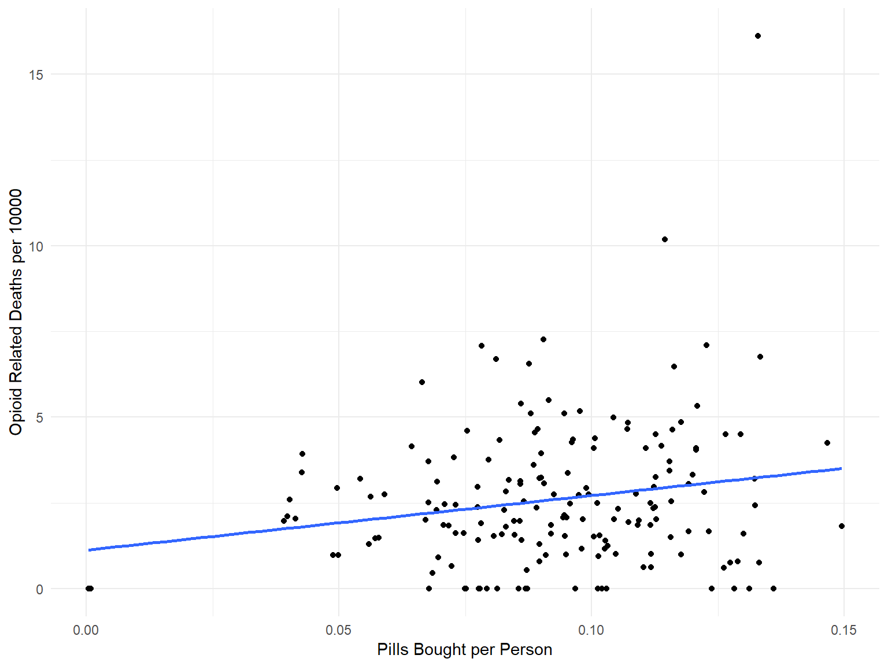

Home
Analysis
Demographics
Trends
Statistical Learning
Report
Screencast
Exploring Opioid Prescriptions
Jared Garfinkel
11/29/2019
is there a rural/urban gradient?
spaghetti plots
## Joining, by = "county"
clustering with opioid deaths
clustering with ER visits
